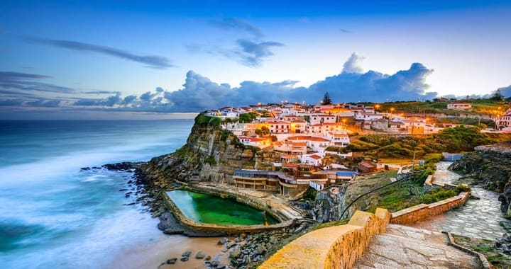

Dicas de Viagem
Economizando muito dinheiro em Lisboa e Portugal
Veja aqui várias dicas legais para economizar muito dinheiro em Lisboa, Porto e qualquer outra cidade de Portugal que você deseje conhecer também. São dicas úteis para você conseguir economizar na hospedagem, comida, atrações, passeios, passagem, aluguel de carro, no seguro viagem que é obrigatório para Europa e muitas outras dicas que vão fazer você economizar muito na sua viagem. Sabendo economizar um pouco em cada lugar e reserva que for fazer, sua viagem para Lisboa, Porto e toda a Portugal vai sair muito mais barata do que planejava. São dicas incríveis e comparadores de preços excelentes para você planejar sua própria viagem, conseguindo sempre os melhores preços.
Como economizar muito no seguro viagem obrigatório
Vamos começar com o Seguro Viagem Internacional que é obrigatório para entrar em Lisboa, Porto, Portugal e qualquer lugar da Europa. Já que é obrigatório e não tem como fugir dele, dá para economizar e muito fazendo o seu. Existe um comparador incrível que compara o seguro viagem nas maiores e melhores empresas da Europa. Você entra no site, digita o período da sua viagem e ele vai te dar uma lista de todos os seguros viagens disponíveis e o valor de cada um. É só ver o que achar melhor, analisar as coberturas e contratar o seguro, que pode ser parcelado em até 12 vezes.
Economizar em Lisboa
Se quiser pesquisar ou contratar, clique aqui em Comparador de Seguro Viagem para fazer sua pesquisa. Nós sempre fazemos o nosso por ele e além de achar preços incríveis ele é de confiança e as empresas são ótimas. A Travel Ace, Green Card, Vital Card e Assist Card são as líderes mundiais. Lembrando que para entrar na Europa você é obrigado a ter um Seguro Viagem com cobertura mínima de 30 mil euros em assistência médica. Então escolha o seu seguro levando essa regra em consideração que não terá problemas.
Economize mais de 25 euros por dia com água
Essa dica é super simples e no final das contas faz você economizar um bom dinheiro. Para quem não sabe, em toda a Europa é super comum as pessoas pedirem água da torneira nos restaurantes, pois lá ela é super bem tratada e ótima para o consumo. Os moradores já estão acostumados a pedir, mas os turistas não sabem e se você pedir somente "água", eles irão trazer uma garrafa de vidro de água natural que é um pouco cara, em média 8 euros 1 litro. Gastando isso todos os dias, no almoço e na janta, dá um valor considerável. Então peça sempre "tap water", a água de torneira. É super normal e não é falta de educação nem estranho. E as águas de garrafinhas que ficam no frigobar do hotel são geralmente uns 4 ou 5 euros, então vá em um mercado perto do hotel e compre um monte já por 1 euro cada uma. Só nessas economias de água, em uma viagem de 10 dias você economiza uns 300 euros se estiver em duas pessoas.
Como economizar nos passeios em Portugal
Lisboa, Porto e as cidades portuguesas possuem vários passeios e atrações gratuitas que são uma ótima forma de economizar na viagem. Procure visitar as praças, os portos e lugares turísticos que não são abertos ao público. Em Lisboa, um passeio incrível é ver o por do sol de cima de alguma colina, como por exemplo do Miradouro Nossa Senhora do Monte. É um dos lugares mais altos de Lisboa e pouco visitado pelos turistas, com um visual incrível de toda a cidade. Outra dica para economizar em Lisboa é visitar pontos turísticos gratuitos, como a Torre de Belém de Lisboa, curtir a vista do Castelo de São Jorge de fora e procurar ir ao Mosteiro dos Jerónimos, de domingo antes das 13 horas, pois é a entrada é gratuita, que é considerado uma das Sete Maravilhas de Portugal. E tem museus que possuem entrada gratuita como o MUDE, Museu do Design e da Moda, e o Museu Colecção Berardo que fica no Centro Cultural Belém. São passeios incríveis que vão fazer você economizar muito em Lisboa e Portugal.
Economizar em Lisboa Castelo São Jorge
Outra dica para economizar com os passeios é comprar os ingressos antes pela Internet, que além de serem sempre mais baratos, você economiza um bom tempo que perderia nas filas das bilheterias e já viaja com os ingressos em mãos. Um site legal que nós sempre utilizamos é esse Site de Ingressos da Europa que vende ingressos para os principais pontos turísticos e passeios de Lisboa, Porto e de todas as cidades da Europa. Eles são um dos maiores vendedores de ingressos de passeios e pontos turísticos de todas as cidades do mundo, o site está em português e o bom é que você compra todos os seus ingressos em um único lugar, ao invés de ficar comprando no site de cada atração. É muito mais prático, você tem um atendimento excelente para resolver qualquer problema ou dúvida que tiver e os preços são ótimos e muitas vezes mais barato do que no próprio site da atração. Facilitou bastante nossas viagens e ajudou a economizar tempo e dinheiro. Os passeios de Lisboa que mais indicamos são o Oceanário de Lisboa, Castelo de São Jorge e a Torre de Belém, que são os principais pontos turísticos.